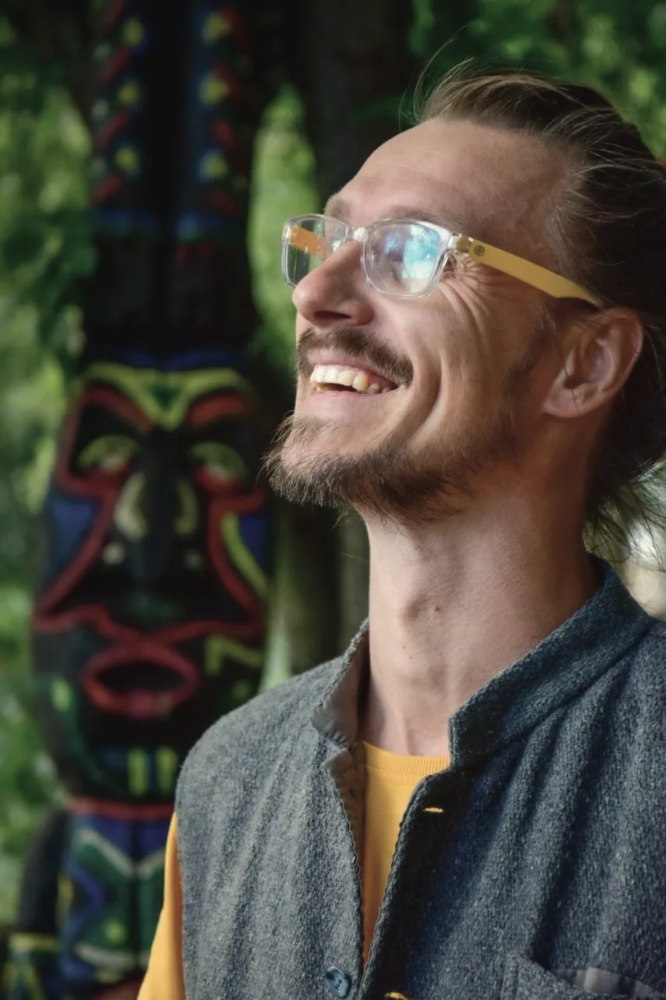

Не дієта на силі волі, а індивідуальний протокол: аюрведа плюс сучасна дієтологія.

Бо жорсткі дієти та голодування вводять організм у стан стресу, замість усунення причини. Тіло у відповідь вмикає режим виживання і через короткий термін все відкочується назад.
Стрес, зриви й відкат ваги. Заборони працюють проти вас, а не на результат.
Завдають шкоди мікрофлорі та печінці замість усунення причини.
Без підготовки й супроводу — це удар по нервовій системі та обміну речовин.
Чужі схеми без урахування вашої конституції, клімату й способу життя.
Важкість в тілі, спад енергії — а ви знову шукаєте «нову дієту з понеділка».
Не заборони й сила волі, а індивідуальний 21-денний протокол: харчування під вашу конституцію, фітозбори, м'які процедури й супровід. Тіло очищається природньо — спокійно й до кінця.
Шлях 21 веде організм від м'якої підготовки до глибокого очищення й закріплення нового способу життя — авторська адаптація аюрведичної Панчакарми. Кожен тиждень — окрема фаза зі своїм фітозбором, харчуванням і процедурами.

М'яке розвантаження, режим дня й перший фітозбір. Готуємо тіло до глибокого очищення без стресу.

Збори №2 і №3 працюють паралельно: один знімає бродіння і запускає лімфу, другий сорбує й виводить під захистом рослинних слизів.

Закріплення нового способу життя й формула харчування на майбутнє. Розбір на другій консультації.
Три збори — це три модулі з різними завданнями. Тиждень 1 розвантажує жовчні протоки, тиждень 2 очищує кишківник під захистом рослинних слизів, на тижні 3 трави повністю скасовуються й лишається напій спецій. Склад може коригуватися під вашу конституцію, стан і сезон.
Розвантаження жовчних проток, лімфодренаж, зняття спазмів.
Приймається паралельно зі Збором №3 — знімає побічні процеси й живить флору.
Евакуаторний модуль: працює лише в парі з мукопротекцією.
Відновлення бар'єрів і повернення власних ферментів.
Правила безпеки другого тижня. Псиліум і клітковина потребують води: 2–2.5 л чистої води на добу, інакше комплекс дасть зворотний ефект. Одночасний прийом Зборів №2 і №3 триває рівно 7 днів — довше не можна.
Збори не потрібно шукати самому: склад підбирається під вашу дошу й стан, а готові збори можна замовити окремо.
Фітопідтримка — оздоровчий інструмент, а не лікування: вона доповнює, а не замінює діагностику й терапію. За хронічних станів, вагітності, лактації та прийому препаратів склад узгоджується з вашим лікарем.
Детокс — це не лише їжа. Це режим, фітозбори, процедури й дихання, складені в єдиний ритм, який легко вбудувати в робочий графік.
Схема харчування → фітозбір → процедура → дихання зберігається всі 21 день — змінюється лише глибина. Тому результат закріплюється, а не відкочується.
Шлях 21 побудований на аюрведі — системі здоров'я віком понад 5000 років — і пропущений крізь призму сучасних знань та особистої практики. Кожна методика перевірена автором особисто.
Немає однієї дієти для всіх. Вата, Пітта, Капха — три типи обміну; те, що зцілює один тип, шкодить іншому. Протокол будується під вашу дошу, клімат і ритм життя.
Очищення йде не лише на фізичному, а й на ментальному та емоційному рівні. Тіло, розум і емоції — єдина структура.
Прибираємо аму — метаболічні токсини, що накопичуються від неправильного травлення. Працюємо пролонговано, без агресивних чисток.
Завдання — не «посидіти на дієті», а налагодити циркуляцію енергії, повітря й рідин у тілі. Тоді очищення відбувається саме.— основа методики Шлях 21

Шлях 21 — авторська адаптація аюрведичної Панчакарми до середніх широт і ритму сучасного життя. 21 день — період, достатній, щоб запустити глибокі фізіологічні зміни й сформувати нові звички, без кризів очищення.
Пурвакарма — мобілізація токсинів перед виведенням.
Виведення розчинених токсинів із травної та лімфатичної систем.
Розпалювання «агні» — вогню травлення — і закріплення результату.
Конституційний підхід. Протокол будується під вашу дошу — Вата, Пітта чи Капха. Те, що зцілює один тип, шкодить іншому, тому універсальних «детоксів на соках» тут немає — лише перебудова ваших біоритмів.
Метод спирається й на сучасну науку: дослідження осі «мозок–кишківник» і практик усвідомленості підтверджують вплив таких підходів на травлення, гормональний фон і психоемоційний стан. Понад 1000 людей уже пройшли програму.
Матеріал має інформаційно-оглядовий характер. Інтегративний детокс доповнює, а не замінює конвенційне лікування; за хронічних станів і прийому препаратів консультація обовʼязкова.
Усе, що зазвичай збирають по шматках у різних спеціалістів, тут зведено в один супроводжуваний протокол на 21 день. У форматі з супроводом до цього додається особиста робота з автором.
Три різні збори під три тижні програми — трави нашої широти, зібрані у синергійні композиції, а не «одна чарівна рослина». За потреби (інша країна, індивідуальні реакції) підбираються аналоги.
Живі зустрічі з автором у записі: не «лекції про користь води», а розбір логіки методу, щоб ви розуміли, навіщо кожен крок протоколу.
Детокс — це не лише їжа. Процедури розганяють лімфу й циркуляцію, тому збори працюють м'якше та швидше. Усе робиться вдома, без обладнання.
Покрокові протоколи на кожен тиждень: що їсти, коли пити збір, які процедури й у якому порядку. Схема харчування → фітозбір → процедура → дихання тримається всі три тижні — змінюється лише глибина.
Саме тут програма перестає бути «курсом для всіх». Автор дивиться на вашу конституцію, стан і історію — і під це збирається протокол.
Протокол під вашу дошу — і жива корекція по ходу, а не «розбирайтеся самі». Тіло реагує по-різному, і другий тиждень майже завжди потребує підстроювання.
Очищення йде на всіх рівнях одразу. У кожного більше працюють ті системи, що цього потребують — це залежить від вашої конституції.
Програма не є медичною діагностикою чи лікуванням. За хронічних станів і прийому препаратів індивідуальні протипоказання обговорюються на консультації.

Я — Євгеній Корякін, дослідник і практик аюрведи та сучасної дієтології. Усі методики, які я даю людям, перевірені мною особисто.
"Аюрведа бачить людину як індивідуальність. Тому не може бути однієї дієти, одного препарату й однієї дози для всіх."
Мінус у вазі, легкість у тілі, спокійніший сон, краще травлення, більше фокусу й відчуття, що нові звички справді закріплюються.


«Зашла в программу с весом 68,3 (цель была 60–62). На выходе — 64,7. Продолжаю питаться по правилам, и через 6 дней после программы вес уже 62,0. Лёгкость в теле, нету тяги к вредностям.»
«У мене задача стояла дуже легкої корекції ваги (62 до детоксу, 58 після) і покращення самопочуття. Пішли головні болі, покращився фокус уваги і продуктивність, скоротився час, який тіло вимагає на сон.»
«Впервые, наверное, в жизни чувствую свободу в еде и хорошее самочувствие. Со второй недели — стабильно лучше каждый день.»


Скріншоти реальних повідомлень і відгуків учасників — мовою оригіналу. Гортайте, щоб подивитися далі.
Фото опубліковані за згодою учасників. Результат індивідуальний і залежить від стану, режиму та дотримання протоколу — це не медична обіцянка і не гарантія цифри на вагах.
Відео записані учасниками самостійно й опубліковані за їхньою згодою.
Понад 1000 людей уже пройшли Шлях 21.
М'який міні-курс на 1 день: умовне голодування без стресу, щоб вийти з кола «стрес → їжа → провина» й відчути легкість. Найлегший перший крок до здорових стосунків із їжею.
Це м'який вхід, а не заміна повній програмі. Шлях 21 запускає значно глибше й стійкіше очищення.
Шлях 21 — індивідуальний супровід
Ми зв'яжемось з вами, щоб узгодити старт і формат індивідуального ведення.